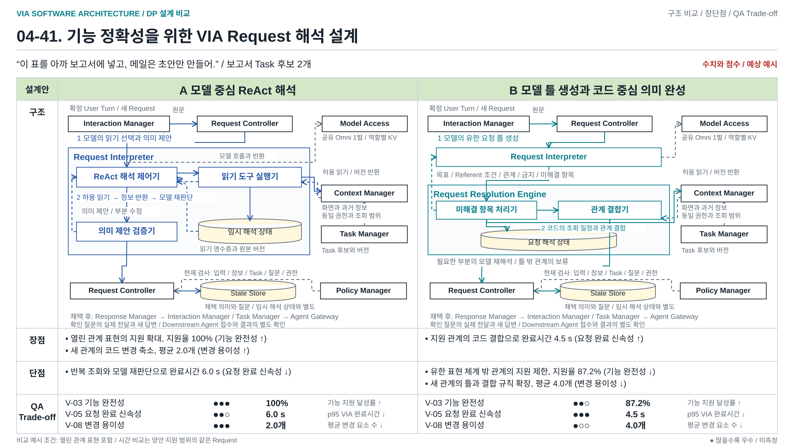
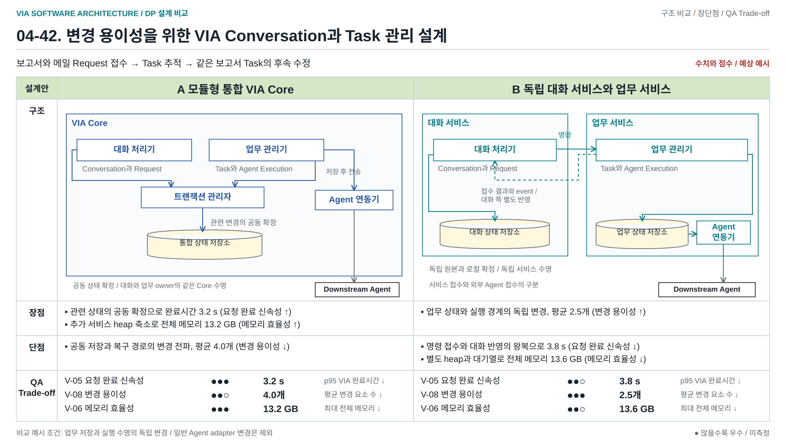
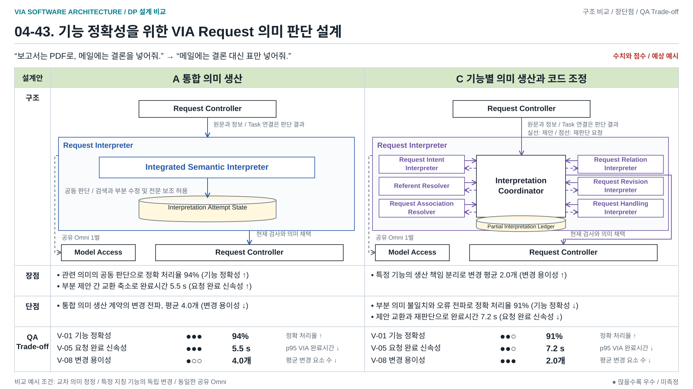
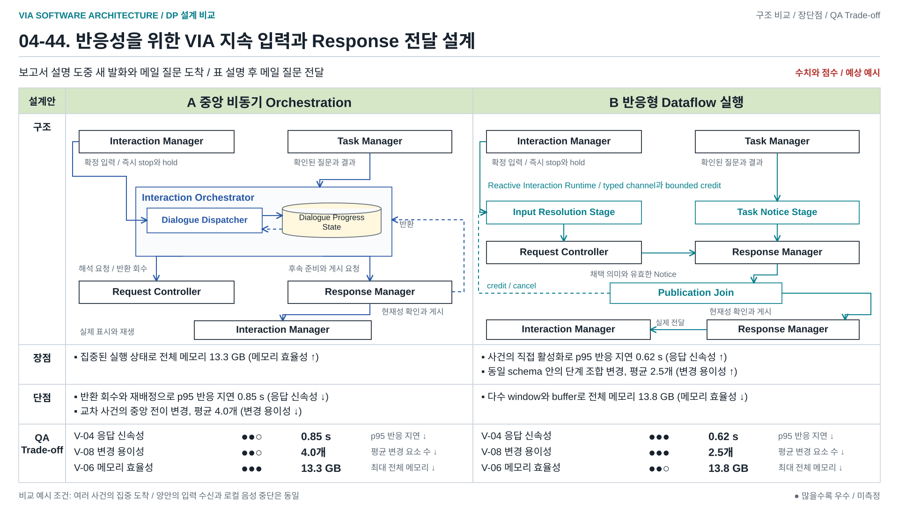
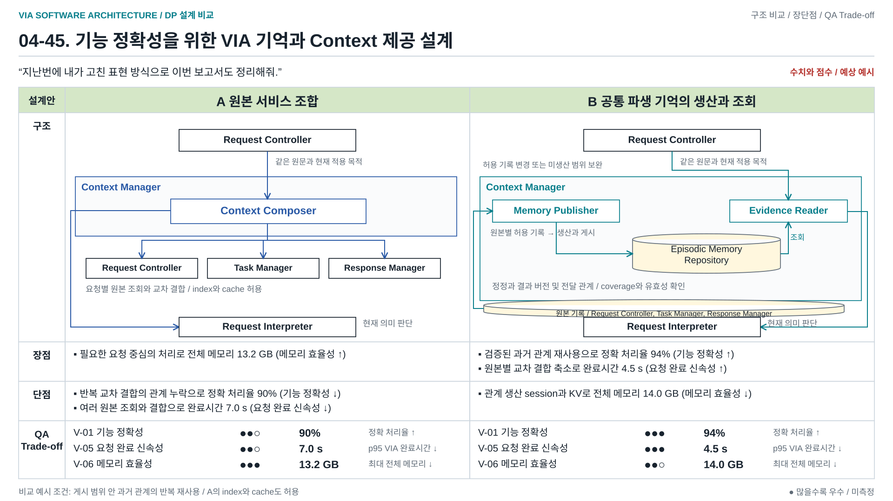

VIA DP 설계 비교 41~45
수치와 동그라미 점수는 형식 검토용 예상 예시. 실측 결과 또는 대안 선정 아님.
5페이지 편집 원본
04-41 설계 비교
draw.io / SVG / PNG

04-42 설계 비교
draw.io / SVG / PNG

04-43 설계 비교
draw.io / SVG / PNG

04-44 설계 비교
draw.io / SVG / PNG

04-45 설계 비교
draw.io / SVG / PNG
